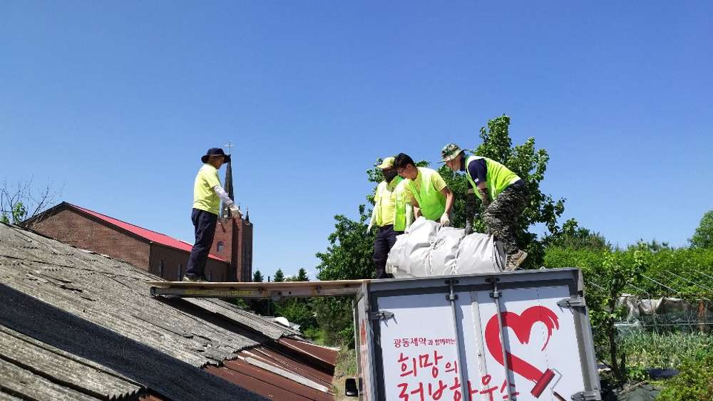
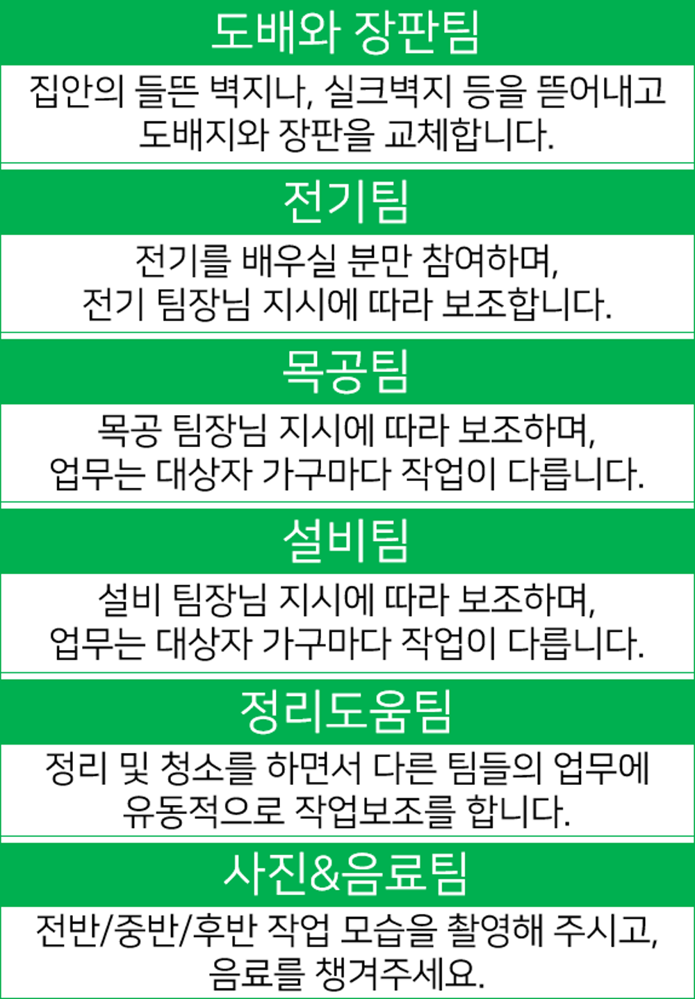

재미와 보람을 다 잡고 싶은 여러분을 위해 희망의 러브하우스의 집수리 봉사를 추천 활동으로 소개드립니다.
무료 집수리 봉사단체 희망의 러브하우스
우리는 19년간 각자의 작은 힘을 보태어 주변의 어려운 이웃들을 위해 안전하고 쾌적한 주거 환경을 만드는 집수리 봉사단체입니다.
한 주 간의 피로함을 달래는 소중한 주말이지만, 내가 가지고 있는 것들에서 작은 부분을 나누어 보세요. 인테리어 전문가가 아니어도, 집수리 전문가가 아니어도 좋습니다. 사람과 사람이 어우러져 함께 살아가는 세상이 즐겁습니다.

비가 와도 진행합니다. 갑자기 열나고 아프시면 미리 연락주세요.
1. 비가 와도 봉사활동은 진행합니다. 천막을 쳐도 작업하다보면 비를 맞을 확룔이 높습니다. 작업복과 비를 맞으면 갈아입을 옷을 준비하여 감기에 걸리지 않도록 노력해 주세요.
2. 몸이 아프거나 열이 있으신 분들은 참석을 자제하여 주시기 바랍니다. 열이 나거나 아프신 분들은 면역력이 떨어지고 곰팡이와 먼지가 많은 집수리 현장에서 질병을 얻을 확률이 높아질 것 같습니다.
3. 나눠드릴 마스크는 반드시 착용해 주세요. 답답하시더라도 서로를 위해 반드시 착용해 주시기 바랍니다. 봉사 진행과정에서 답답하시면 대상가구 밖, 사람이 없는 곳에서 잠시 마스크를 벗고 정비해 주세요.

[활동시간 인증 및 상해보험 안내]
1. 자원봉사포털 1365 회원은 봉사활동시간 인증 및 상해보험 지원을 받을 수 있습니다.
2. 보험 적용을 위해 봉사일 전, 1365 홈페이지 - 회원정보관리 코너에서 보험 가입 정보 제공/활용 동의 여부를 꼭 확인하세요.
3. 봉사활동 적립기한은 봉사일로부터 1개월 입니다.(행정안전부)
4. 봉사시간은 1일 최대 8시간까지 적립이 가능합니다. 1박2일간 집수리 봉사의 경우에도 하루에 8시간씩 적립됩니다.